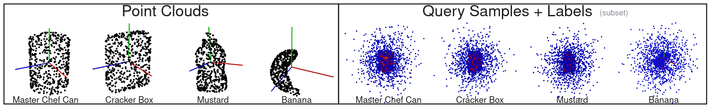
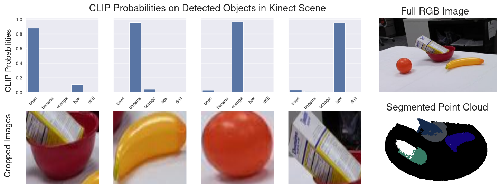
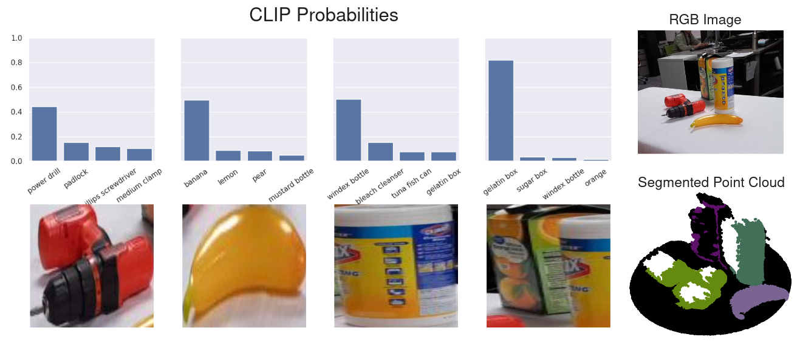
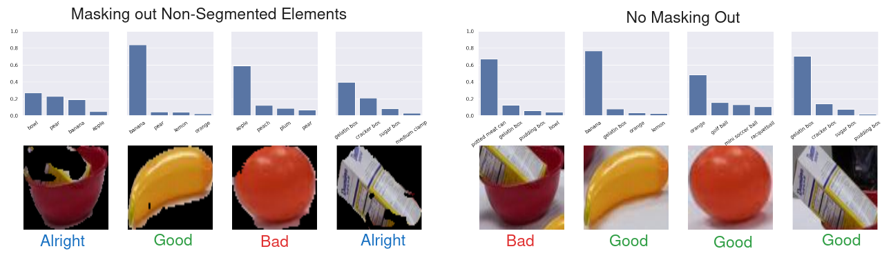
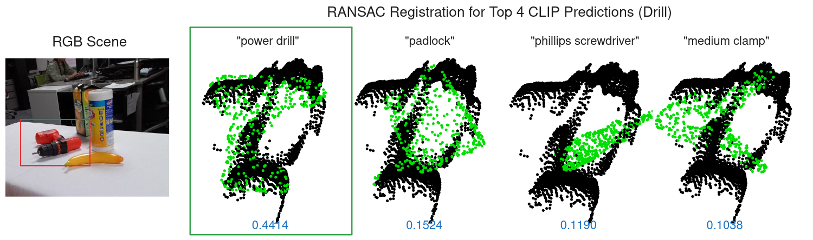
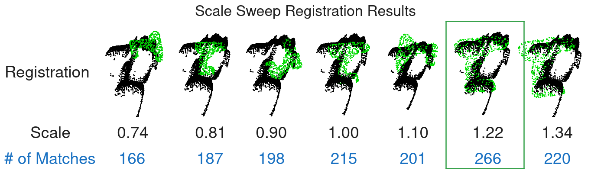
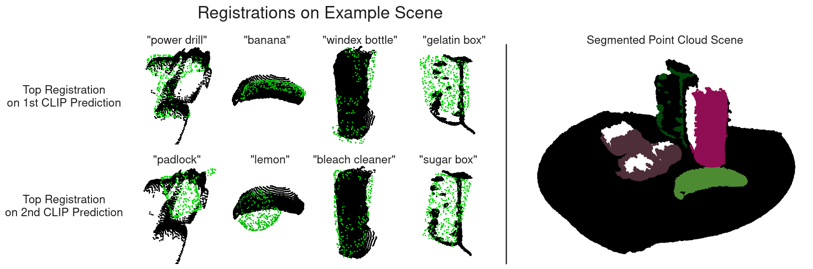
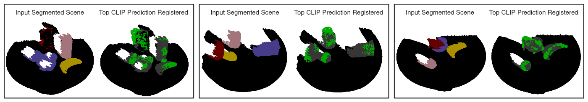
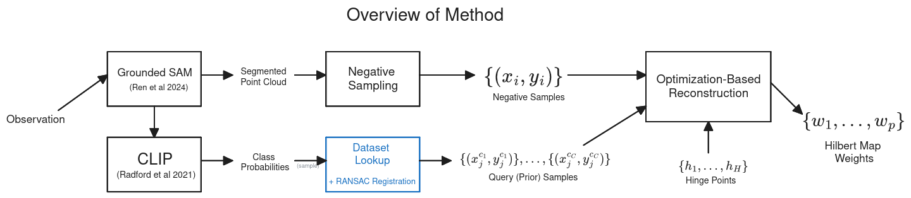
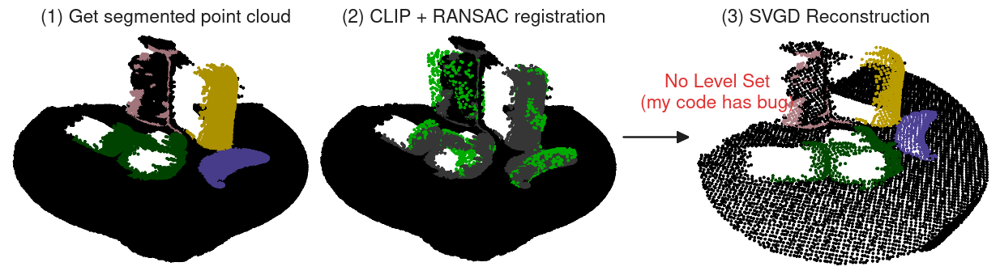

2024 Nov 15
Robustly building a continuous 3D representation of a multi-object scene is useful for many robotic manipulation tasks. These scenes often contain noisy observations and varying amounts of occlusion, which learned methods can be fragile to. Previous work such as V-PRISM [1] can robustly map the scene, but doesn’t use prior information to reconstruct known objects. In this future work, we are building a method to robustly reconstruct tabletop scenes by leveraging object-level priors. Specifically, we want a method that (a) is more accurate with in-distribution objects; and (b) is robust to out-of-distribution objects while still being able to handle occlusion. We framed the problem as a Bayesian inference over Hilbert map [2] weights: P(w | D, R) \propto P(D | w) P(w | R) = P(D | w) \cdot \mathbb E_{c \sim P(c|R)} \left[P(w | c)\right] We would then include “query” samples from sampled classes as the prior. We would add some hyperparameters and run optimization on the objective: -\lambda_1 \ln P(D | w) - \lambda_2 \ln \mathbb E_{c \sim P(c | R)} \left[ P(D_c | w) \right] - \lambda_3 \ln P(w) Here is a visual of what the prior samples look like:

After last meeting, I wrote down the following action items for this week:
This meeting, I tried to work towards each of these items.
We need some way to compute P(c | R), or the probabilities for each “class” conditioned on some identification results. Last time, it seemed like using chamfer distance had some flaws, so we discussed using language and foundation models. The foundation model we discussed was PointLLM [3], but I found it hard to run on the lab computer, and the lab computers GPU (2070 with 8GB RAM) didn’t meet the RAM requirements for the smallest quantized version of the model. However, I realized that this task was perfect for the CLIP model [4]. I collected a couple more Kinect scenes in the lab, and here is the CLIP results for one of them:

I take the detections and crop each segmentation results into a
512x512 image that is fed into CLIP. As you can see, CLIP is able to
accurately classify each object. In the above image, I only ran CLIP
with the classes of
["bowl", "banana", "orange", "box", "drill"]. I wanted to
make sure that this approach scaled to the level that we are going to be
using for our prior. So, I made a list of 50 different strings for
objects in the YCB object dataset [5] and visualized the top results.
Here those are:

In the above image, we can see that the drill and banana are correctly identified. The Clorox bottle and orange juice are not actually meshes in the YCB mesh dataset. The CLIP model, however, is pretty confident in its predictions for the out-of-distribution objects.
One thing that I considered was masking out the non-segmented parts of the image during classification. However, it had mixed results. Here is comparing all the labels and taking the best ones when running CLIP on the first scene. Here is the comparison:

One thing to note is that in the masking case, the orange being classified as an apple really wouldn’t affect the reconstruction that much as both are fairly spherical.
Question: For those who know CLIP more than me, is there any techniques for having a “null” class that to classify objects that don’t fit into the other classes?
Last time, I tried out some of the built-in registration stuff in Open3D. It was way faster, but only the RANSAC option that used FPFH features [6] really worked well on the banana. In this section, I explore a little more to make sure that this option can fit our use case.

Note: The blue numbers at the bottom of each registration in the above image are the CLIP probabilities of that class.
One thing that we discussed last meeting was scale. In the above image I hand picked a scale that I knew was pretty good. In order to add robustness to scale, I tried to use the scale option that is provided in Open3D, but it wasn’t very good. Because of this, I implemented a small sweep over scale. The idea is that we can simply take the “best fit” result based on the number of inliers. Here is a visual of what the sweep looks like for the drill:

Here is a visual of the full pipeline for registrations on the example scene:

I tuned some hyperparameters and here is a quick visual of registrations on a few kinect scenes:

Question: Do you think this looks “good enough” or should we also do something more?
Our current working method draws inspiration from Retrieval-Augmented Generation [7] (which inspired the CoRL paper, RAM [8]). We take a segmented RGB+XYZ observation and create “detection results” R along with negative samples D similar to [1]. Then, we have a Bayesian problem of finding the correct Hilbert map [2] weights w of the distribution. Assuming conditional independence, we have: P(w | D, R) \propto P(D | w) P(w | R) = P(D | w) \cdot \mathbb E_{c \sim P(c|R)} \left[P(w | c)\right]. We sample from P(c|R) and register each component using RANSAC and FPFH features from [6]. We retrieve the stored samples for the sampled objects, denoted as D_c. Then we solve the following optimization problem: -\ln P(w | D, R) \approx -\lambda_1 \ln P(D | w) - \lambda_2 \ln \mathbb E_{c \sim P(c | R)} \left[ P(D_c | w) \right] - \lambda_3 \ln P(w), using something like Stochastic Gradient Langevin Dynamics or SVGD [9]. Here is a figure that outlines the whole process:

I tried to hook everything up. I used the above process for prior generation and used the same sort of negative sampling as V-PRISM. I threw SVGD at it for reconstruction and it didn’t do great. Here is an image of it:

There were no level sets at all. I think that this is because I must be doing something silly in my code, so I will try to debug and fix this over the weekend hopefully.
Here are the potential experiments I am thinking of doing:
Here is the info that I have gathered; it should be correct as far as I know:
| School | Due | GRE | Statements | Refs | Fee |
|---|---|---|---|---|---|
| U of U | Dec. 15 | Optional | 1 (1-3 pages) | 3 | $0.00 |
| UW | Dec. 16 | No | 1 | 3 | $90.00 |
| CMU | Dec. 11 | Optional | 1 (2 pages) | 3 | $100.00 |
| UT Austin | Dec. 15 | Optional | 1 (2 pages) | 3 | $65.00 |
| U Penn | Dec. 16 | Optional | 1 (2 pages) | 2 | $90.00 |
| MIT | Dec. 1 | No | 1 | 3 | $90.00 |
| NYU | Dec. 12 | Optional | 1 (2 pages DS) | 3 | $110.00 |
| UCSD | Dec. 18 | Optional | 1 | 3 | $135.00 |
| UIUC | Dec. 15 | Recommended | 2 (1-2 pages, 250 w) | 3 | $70.00 |
| U Mich | Dec. 1 | No | 2 (1-2 pages both) | 3 | $75.00 |
| U Toronto | Jan. 9 | Maybe | 1 (1000 words) | 2 | $89.58 |
Question: It says CMU Robotics PhD application DOESN’T require GRE score, is this true?
Here is the source for that: https://www.cs.cmu.edu/academics/application_instructions
If this is all true and my information is accurate, I don’t think taking the GRE would really get me that much as far as PhD applications.
I didn’t have that much time to work on the Overleaf draft that much, as I am still trying to get the method up and running. Anyways, here is the link to the view-only version of the overleaf document: